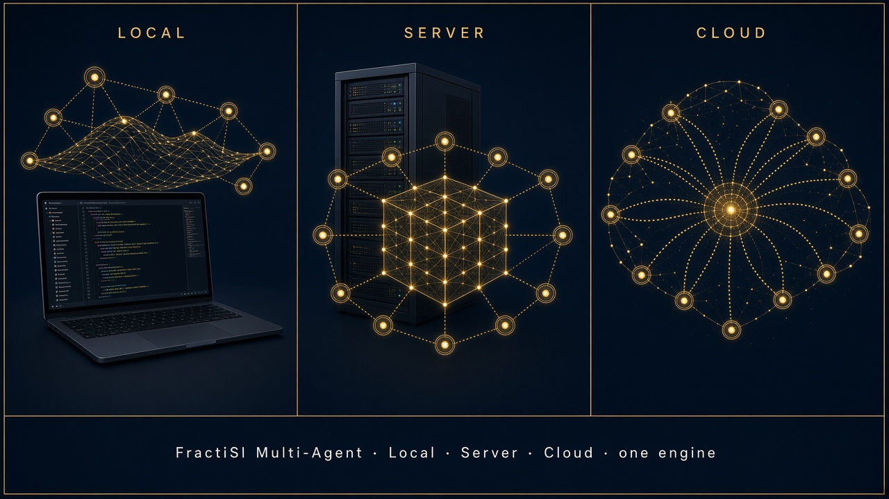

Product
Install beside the stack you run. Local, Server, and Cloud share one engine.

Library
The papers behind Tiny Footprint—from rhyme architecture to the product whitepaper.

Open source
Run it. Refute it. Fork it. Community kit free.